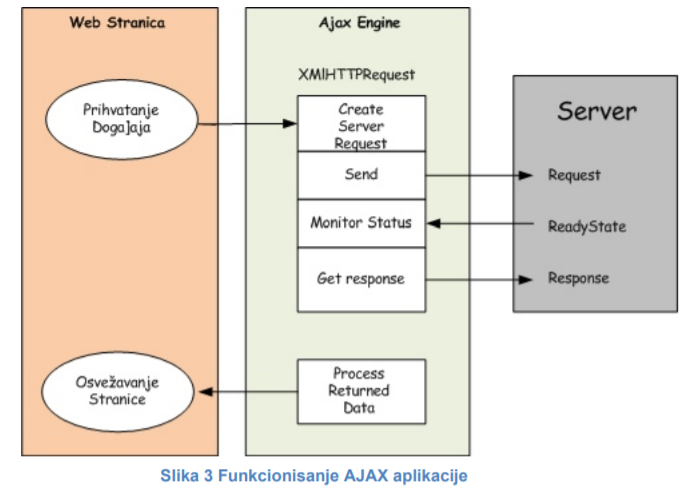

Prilikom dodavanja AJAX funkcionalnsoti u aplikaciji, neophodno je definisati koji događaj na strani ili korisnička akcija će biti odgovorna za pokretanje asinronog poziva i HTTP zahteva. U AJAX aplikaciji, asinroni HTTP zahtev se kreira pomoćo objekta XMLHTTPRequest. Nakon što se pošalje zahtev, neophodno je odrediti metod ili funkciju koja će pratiti stanje i prihvatiti odgovor sa servera. Konačno, nakon pristizanja odgovora sa servera, dolazi do promena na stranici korisnika (ispis teksta, popunjavanje polja, promena položaja elemenata i sl.)
U klasičnim JavaScript aplikacijama, ako je potrebno preuzeti informacije iz baze podataka ili sa Web servera, ili poslati informacije serveru, mora se napraviti HTML forma i koristiti GET ili POST metode. Korisnik mora da klikne na „Submit“ dugme da bi poslao ili preuzeo informacije sa servera, a pri tom je neophodno da čeka odgovor servera. Tek nakon odgovora, nova Web strana se učitava u korisnikov browser.
Baš zbog toga što server vraća rezutate u vidu nove web strane svaki put kada korisnik klikne na određeno dugme, klasične web aplikacije su sporije i manje user-friendly. Pomoću AJAX-a, JavaScript uspostavlja direktnu komunikaciju sa serverom preko JavaScript XMLHttpRequest objekta i tako AJAX aplikacije postaju znatno brže. Sa HTTP zahtevom, browser može da pošalje zahtev serveru i primi odgovor od servera bez ponovnog učitavanja (reload, refresh) Web strane. Korisnik pri tom i dalje ostaje na istoj strani, i ne primećuje da se u pozadini odvija browser-server komunikacija.